✓ Preprocessing complete
✓ Weight coverage: 99.7%
✓ Leaf components: 298
✓ Data range: 2011-01 to 2025-10India CPI Inflation Chartbook
Fixed Income Macro Analysis
1. Headline vs Core Trend
Policy anchor: tracking headline and core inflation against RBI target band.
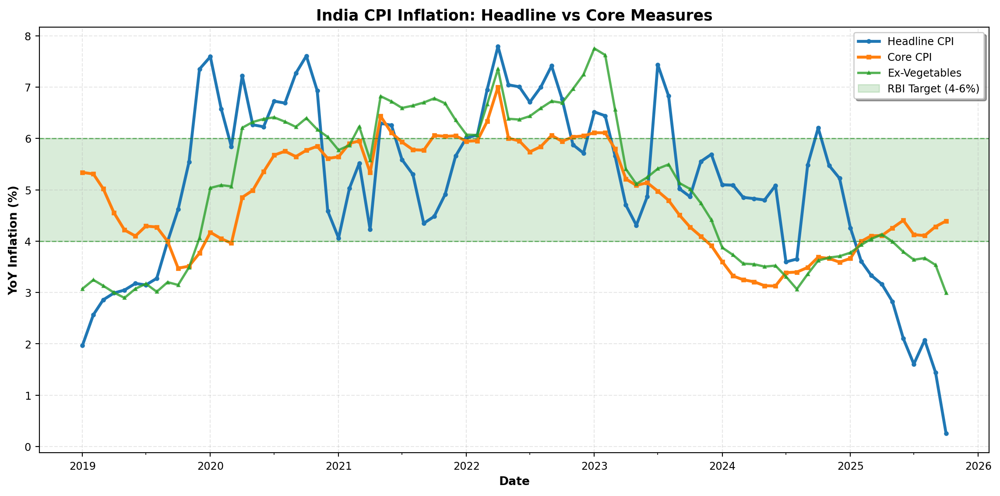
Note: Chart shows available measures. Core = {CORE_COL if CORE_COL else ‘N/A’}.
2. Momentum & Turning Points
Short-term momentum signals for rate traders: 3-month and 6-month SAAR.
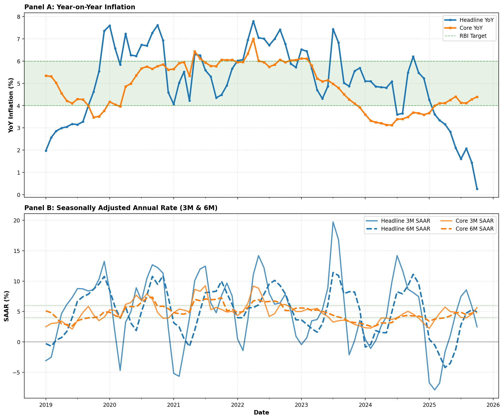
SAAR formula: ((I_t / I_{t-w})^(12/w) - 1) × 100. Captures recent momentum better than YoY during turning points.
3. Inflation Drivers
TRUE contributions in percentage points (not stacked YoY rates). Shows which sectors drive headline inflation.
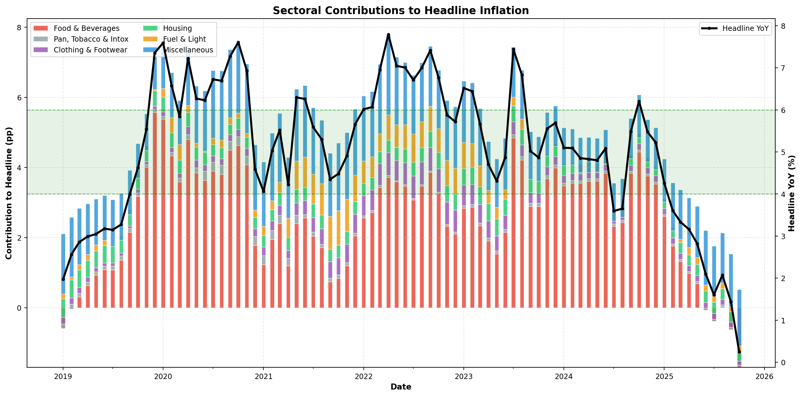
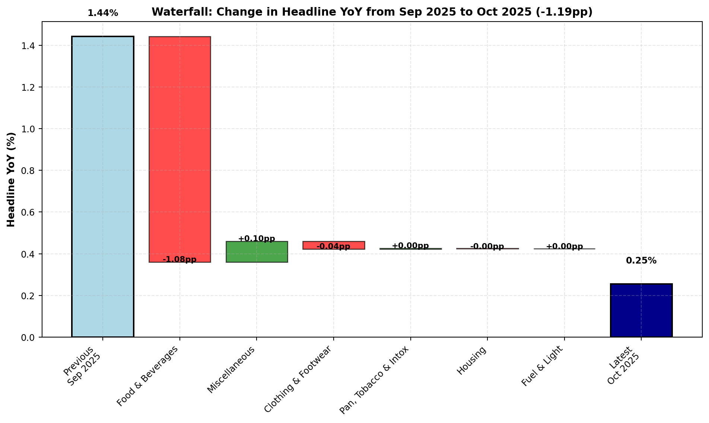
Contributions computed as (group_weight / 100) × group_YoY. Shows true pp impact on headline.
4. Inflation Breadth & Diffusion
Weighted diffusion using leaf components: measures broad-based vs concentrated inflation.
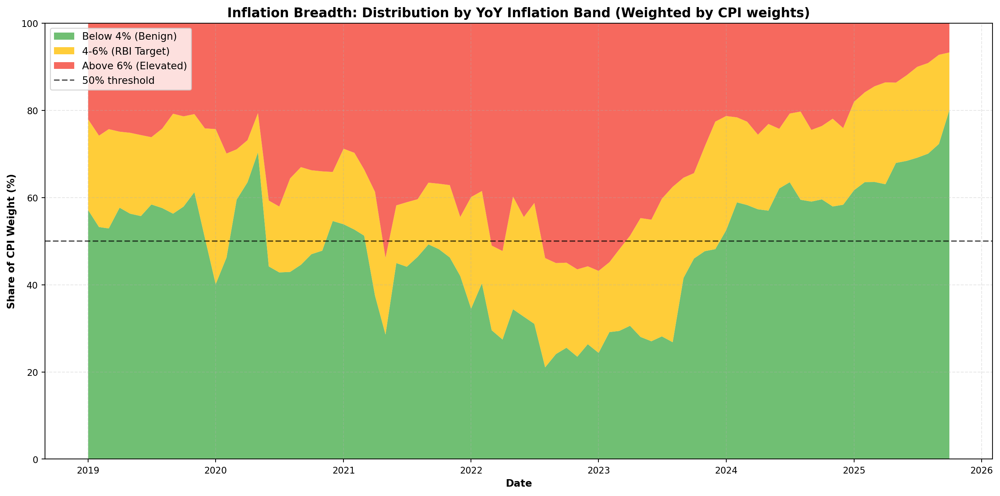
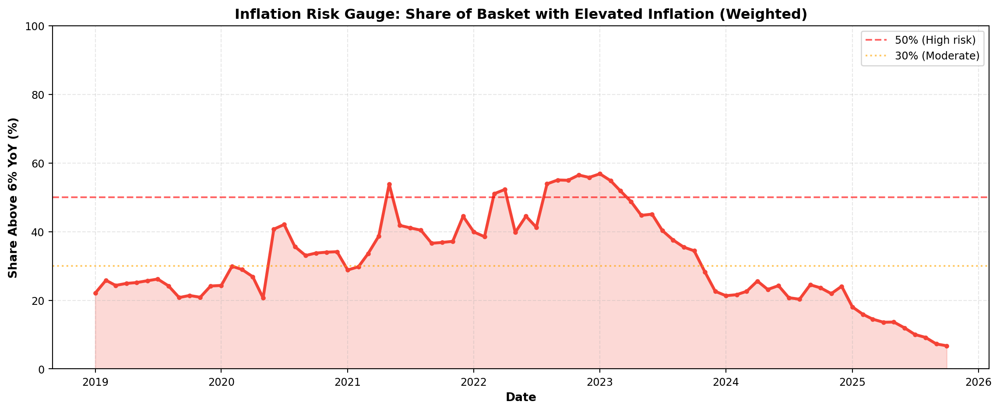
Diffusion method: {‘Weighted by CPI weights’ if USE_WEIGHTED else ‘Unweighted (fallback due to <70% weight coverage)’}. Weight coverage: {weight_coverage:.1f}%.
5. Distribution Snapshot
Cross-sectional distribution of inflation across components (latest month).
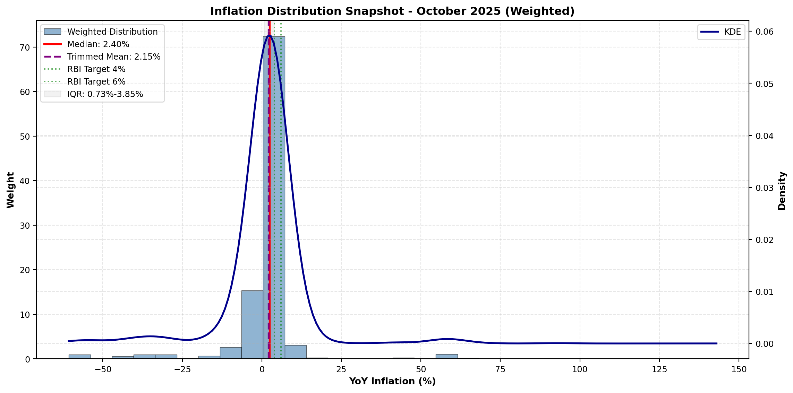
6. Underlying Inflation
Weighted median and trimmed mean: robust measures less affected by outliers.
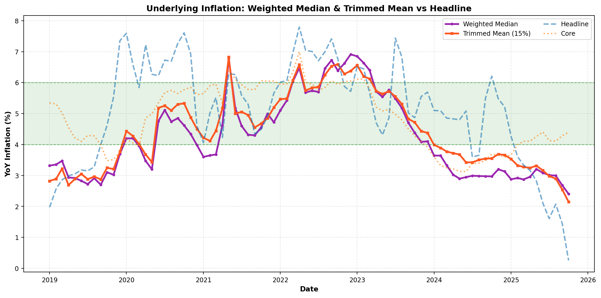
Trimmed mean excludes top/bottom 15% by weight. More stable than headline during supply shocks.
7. Seasonality Patterns
MoM inflation heatmaps reveal seasonal patterns in key categories.
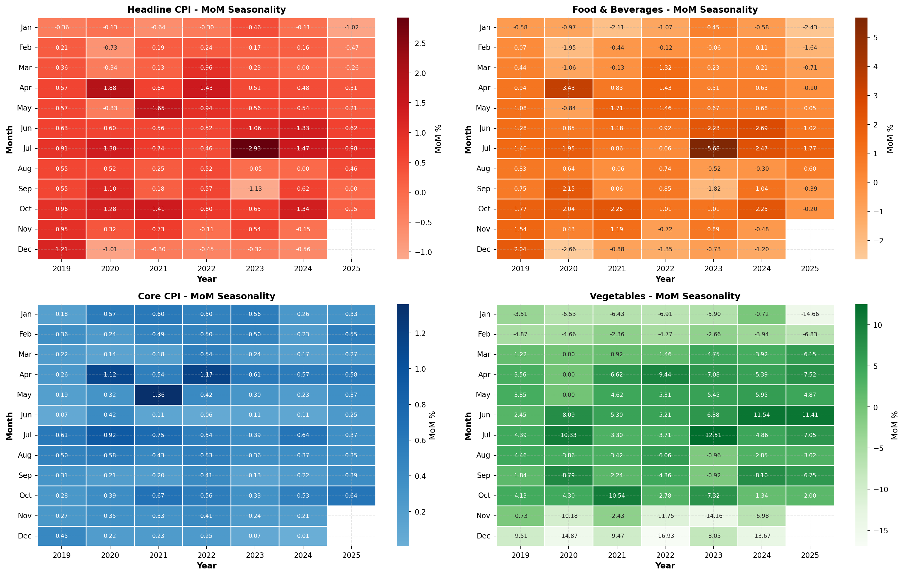
Color intensity shows MoM % change. Patterns reveal recurring seasonal effects (e.g., harvest cycles, festival demand).
8. Shock Trackers
Volatile components and stress indicators for fixed-income positioning.
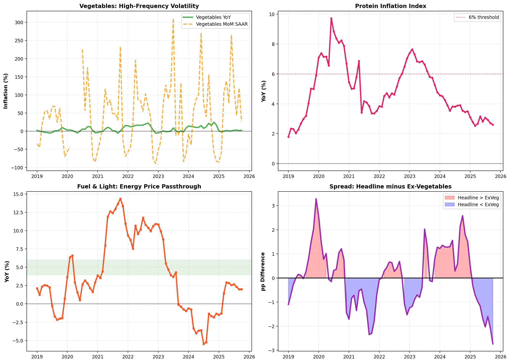
Shock trackers highlight volatile components driving near-term inflation surprises.
9. Top Movers
Components with largest contribution to recent inflation changes (leaf-level only).
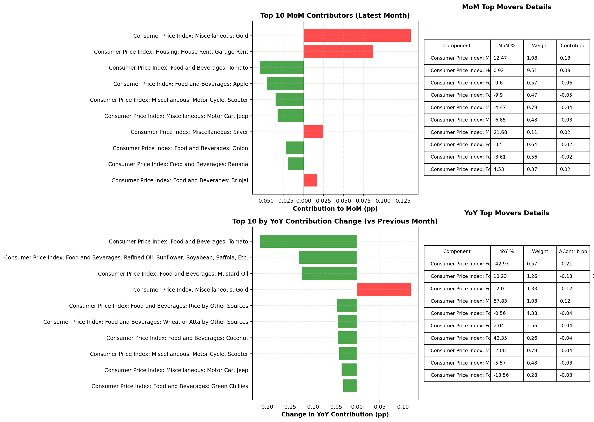
Contribution-aware analysis: identifies which components materially moved headline inflation.
Appendix: Methodology & Data Diagnostics
Key Definitions
YoY (Year-over-Year): 12-month percentage change in index level: \(\text{YoY}_t = \frac{I_t - I_{t-12}}{I_{t-12}} \times 100\)
MoM (Month-over-Month): 1-month percentage change: \(\text{MoM}_t = \frac{I_t - I_{t-1}}{I_{t-1}} \times 100\)
SAAR (Seasonally Adjusted Annual Rate): Annualized growth rate over \(w\) months: \(\text{SAAR}_t = \left[\left(\frac{I_t}{I_{t-w}}\right)^{12/w} - 1\right] \times 100\)
TRUE Contribution (pp): Exact percentage point impact: \(\text{Contrib}_i = \frac{w_i}{100} \times \text{YoY}_i\) where \(w_i\) is CPI weight.
Weighted Median: Middle value after sorting components by YoY with cumulative weight reaching 50%.
Trimmed Mean: Weighted average excluding top/bottom 15% of components by weight.
Diffusion: Share of CPI weight (or count) with YoY in specified range (e.g., >6%, 4-6%, <4%).
Data Processing Notes
Code
print("=" * 70)
print("DATA DIAGNOSTICS SUMMARY")
print("=" * 70)
print(f"\n1. RESOLVED COLUMN NAMES:")
print(f" Headline: {HEADLINE_COL}")
print(f" Core: {CORE_COL if CORE_COL else 'NOT FOUND'}")
print(f" Ex-Vegetables: {EXVEG_COL if EXVEG_COL else 'NOT FOUND'}")
print(f" Ex-Gold: {EXGOLD_COL if EXGOLD_COL else 'NOT FOUND'}")
print(f" Food & Beverages: {list(MAJOR_GROUPS.keys())[0] if len(MAJOR_GROUPS) > 0 else 'NOT FOUND'}")
print(f"\n2. WEIGHT COVERAGE:")
print(f" Total leaf components: {len(leaf_cols)}")
print(f" Total weight covered: {weight_coverage:.2f}%")
print(f" Weighted analysis enabled: {USE_WEIGHTED} (threshold: 70%)")
print(f"\n3. TIME COVERAGE:")
print(f" Full dataset: {df['time'].min().strftime('%Y-%m-%d')} to {df['time'].max().strftime('%Y-%m-%d')}")
print(f" 7-year window: {df_7y['time'].min().strftime('%Y-%m-%d')} to {df_7y['time'].max().strftime('%Y-%m-%d')}")
print(f" Total months (full): {len(df)}")
print(f" Total months (7y): {len(df_7y)}")
print(f"\n4. INTERPOLATION POLICY:")
print(f" Method: Linear interpolation for gaps ≤3 months")
print(f" Imputed months: {len(DIAGNOSTICS.get('imputed_months', [])) if 'imputed_months' in DIAGNOSTICS else 'Not tracked'}")
print(f"\n5. MAJOR GROUPS (weights):")
for group, info in MAJOR_GROUPS.items():
print(f" {group}: {info['weight']:.2f}%")
print(f"\n6. AGGREGATE SERIES EXCLUDED:")
print(f" Count: {len(AGGREGATE_SERIES)}")
print(f" Examples: {list(AGGREGATE_SERIES)[:5]}")
print(f"\n7. MISSING DATA HANDLING:")
missing_components = []
for col in leaf_cols:
yoy_col = f'{col}_YoY'
if yoy_col in df.columns:
missing_pct = df[yoy_col].isna().sum() / len(df) * 100
if missing_pct > 10:
missing_components.append((col, missing_pct))
if missing_components:
print(f" Components with >10% missing YoY data:")
for comp, pct in sorted(missing_components, key=lambda x: x[1], reverse=True)[:10]:
print(f" {comp}: {pct:.1f}% missing")
else:
print(f" No components with >10% missing data")
print("\n" + "=" * 70)======================================================================
DATA DIAGNOSTICS SUMMARY
======================================================================
1. RESOLVED COLUMN NAMES:
Headline: Consumer Price Index
Core: Core Index
Ex-Vegetables: CPI (ExVeggies)
Ex-Gold: NOT FOUND
Food & Beverages: Food & Beverages
2. WEIGHT COVERAGE:
Total leaf components: 298
Total weight covered: 99.67%
Weighted analysis enabled: True (threshold: 70%)
3. TIME COVERAGE:
Full dataset: 2011-01-01 to 2025-10-01
7-year window: 2019-01-01 to 2025-10-01
Total months (full): 178
Total months (7y): 82
4. INTERPOLATION POLICY:
Method: Linear interpolation for gaps ≤3 months
Imputed months: Not tracked
5. MAJOR GROUPS (weights):
Food & Beverages: 45.86%
Pan, Tobacco & Intox: 2.38%
Clothing & Footwear: 6.53%
Housing: 10.07%
Fuel & Light: 6.84%
Miscellaneous: 28.32%
6. AGGREGATE SERIES EXCLUDED:
Count: 21
Examples: ['Consumer Price Index: Housing', 'Custom Index 2', 'Consumer Price Index: Clothing and Footwear', 'Consumer Price Index: Miscellaneous', 'Core Bottom Up']
7. MISSING DATA HANDLING:
Components with >10% missing YoY data:
Consumer Price Index: Food and Beverages: Leechi: 29.2% missing
Consumer Price Index: Food and Beverages: Rice by Public Distribution System: 27.0% missing
Consumer Price Index: Food and Beverages: Rice by Other Sources: 27.0% missing
Consumer Price Index: Food and Beverages: Chira: 27.0% missing
Consumer Price Index: Food and Beverages: Muri: 27.0% missing
Consumer Price Index: Food and Beverages: Other Rice Products: 27.0% missing
Consumer Price Index: Food and Beverages: Wheat or Atta by Public Distribution System: 27.0% missing
Consumer Price Index: Food and Beverages: Wheat or Atta by Other Sources: 27.0% missing
Consumer Price Index: Food and Beverages: Maida: 27.0% missing
Consumer Price Index: Food and Beverages: Suji, Rawa: 27.0% missing
======================================================================Limitations & Caveats
- Index Construction: CPI indices provided as-is; no rebasing or chaining performed.
- Weight Accuracy: Weights from detailed_weights.json; may not sum exactly to 100 due to rounding.
- Seasonal Adjustment: Raw data used; no seasonal adjustment applied.
- Component Classification: Leaf vs aggregate status inferred from AGGREGATE_SERIES set.
- Missing Data: Linear interpolation used for gaps ≤3 months; longer gaps left as NaN.
- Weighted Analysis: Falls back to unweighted if weight coverage <70%.
Suggested Use Cases
- Rates Traders: Focus on Sections 1-3 (trend, momentum, drivers) and Section 8 (shocks).
- Policy Analysis: Sections 4-6 (breadth, distribution, underlying) for broad-based vs concentrated inflation.
- Nowcasting: Section 9 (top movers) for latest month attribution.
- Seasonality Research: Section 7 heatmaps for harvest/festival effects.
Chartbook Generated: {pd.Timestamp.now().strftime(‘%Y-%m-%d %H:%M:%S’)}
Data Through: {df[‘time’].max().strftime(‘%B %Y’)}